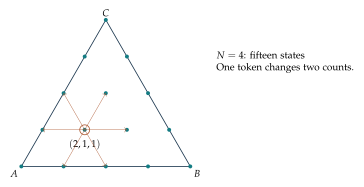
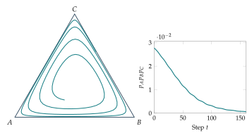

Build a two-dimensional calculus from neighboring distributions in a triangular token lattice.
A probability triangle becomes a lattice
With three categories, a probability vector is \(p=(p_A,p_B,p_C)\) with nonnegative coordinates adding to one. Fix a total of \(N\) tokens. Each allowed state has the form $\(p=\left(\frac aN,\frac bN,\frac cN\right),\qquad a+b+c=N.\)\( A single transfer between categories moves us to a neighboring lattice point. There are \)(N+1)(N+2)/2\( possible states. For \)N=4$, the fifteen points form a small triangular grid.
For instance, from the count state \((2,1,1)\), moving one token from \(C\) to \(A\) gives \((3,1,0)\). The probability displacement is \((1/4,0,-1/4)\). A state near the boundary has fewer allowed moves because an empty category cannot donate a token.
Directional differences of an information function
A scalar field assigns a number to each probability state. Entropy is one example: $\(H(p)=-\sum_i p_i\log p_i,\qquad 0\log0:=0.\)\( Let \)T_{A\leftarrow C}p=p+(e_A-e_C)/N\(, when \)p_C\geq1/N\(. Define its directional difference by \)\(D_{A\leftarrow C}H(p)=H(T_{A\leftarrow C}p)-H(p).\)$ This is the change in entropy caused by transferring exactly one token. A positive value means that move makes the distribution more uncertain.
For \(N=4\), begin at counts \((2,1,1)\). The move to \((3,1,0)\) reduces entropy, whereas the move to \((1,2,1)\) leaves entropy unchanged because it permutes the counts. These are calculations about neighboring points, so no limit is required.
A discrete gradient is a collection of directional changes
Two independent token-transfer directions span the triangular lattice away from its boundary. If \(u=e_A-e_C\) and \(v=e_B-e_C\), we may record $\(\nabla_d H(p)=\big(D_uH(p),D_vH(p)\big).\)\( This is a pair of changes with respect to a specified lattice basis; it is not automatically the Euclidean gradient vector in ambient \)\mathbb R^3$. It tells us which allowed coordinate step raises or lowers the function.
A discrete gradient-ascent rule evaluates allowed neighboring states and moves to one with the greatest positive increase in \(H\). If no neighbor has a positive increase, the rule stops. Ties need a stated choice rule. This is a perfectly concrete difference equation on a finite state space.
Vector fields, circulation, and flux
On an oriented edge \(p\to q\), a gradient edge value is \(H(q)-H(p)\). Adding these values along a path cancels intermediate terms: $\(\sum_{\text{path }p\to q} \big(H(\text{head})-H(\text{tail})\big)=H(q)-H(p).\)$ Every closed-path sum is zero. A general edge field need not have this property: its circulation around a small triangular face can be nonzero.
A flux field assigns an amount transported along each oriented edge. The discrete divergence at a vertex is total outgoing flux minus total incoming flux. Summing divergence over vertices cancels internal edges and leaves only boundary flow. We will use this exact cancellation to describe probability transport in Week 4.
Further investigations and applications
Three types allow motion in two independent directions. A triangle provides a complete picture of their proportions, including mixtures on its edges and pure states at its vertices. Integer population counts supply a natural lattice inside the triangle. These two representations connect geometry with combinatorics.
Reading a probability triangle
Write \(p=(p_A,p_B,p_C)\) with nonnegative entries adding to one. Place the pure states at \(A=(0,0)\), \(B=(1,0)\), and \(C=(1/2,\sqrt3/2)\). Represent \(p\) by the weighted point \[X=p_AA+p_BB+p_CC=\left(p_B+\frac{p_C}{2},\frac{\sqrt3}{2}p_C\right).\] These are barycentric coordinates: the coefficients tell us how much of each vertex contributes. The midpoint of edge \(AB\) is \((1/2,1/2,0)\) in probability coordinates. The center is \((1/3,1/3,1/3)\). A point on edge \(AB\) has \(p_C=0\).
To recover probabilities from a plotted point \((u,v)\), solve the two coordinate equations: \[p_C=\frac{2v}{\sqrt3},\qquad p_B=u-\frac{v}{\sqrt3},\qquad p_A=1-u-\frac{v}{\sqrt3}.\] The point is inside the triangle precisely when these three values are nonnegative.
Example. Locating a state
The distribution \((1/2,1/3,1/6)\) is plotted at \((5/12,\sqrt3/12)\). Its height is one sixth of the triangle’s altitude, reflecting its \(C\) proportion. Its position is closer to vertex \(A\) than to either of the other vertices, consistent with \(A\) being the most common type.
Tokens produce a triangular lattice
Suppose the total count is a fixed integer \(N\). A count triple \((a,b,c)\) with \(a+b+c=N\) gives the probability vector \((a/N,b/N,c/N)\). The possible states form a lattice. Moving one token from \(A\) to \(B\) changes the counts by \((-1,1,0)\) and the probabilities by \((-1/N,1/N,0)\).
There are \[\frac{(N+1)(N+2)}2=\binom{N+2}{2}\] possible triples. One proof fixes \(c\): for \(c=0,1,\ldots,N\), there are \(N-c+1\) choices for \(a\), with \(b\) then determined. Adding gives \((N+1)+N+\cdots+1\). A second proof encodes the triple as \(N\) stars separated into three groups by two bars; choosing the two bar positions among \(N+2\) positions determines the triple.
Example. A lattice of fifteen states
With \(N=4\), the lattice has \(\binom62=15\) states. The count triple \((2,1,1)\) is adjacent to six states obtained by moving a token between two distinct types. At \((4,0,0)\), only two moves are possible because an empty type cannot donate a token.
A normalized growth update generally does not land on this lattice. It defines a deterministic map on all probability vectors. Sampling \(N\) new individuals from the updated proportions produces a random lattice state instead. These are two distinct models with different sources of variation.

Cyclic interactions
For three strategies, a score table is a \(3\) by \(3\) matrix. The average score of type \(i\) is \(f_i=\sum_jM_{ij}p_j\). Consider \[M_s=\begin{pmatrix}0&1&-s\\-s&0&1\\1&-s&0\end{pmatrix},\qquad s>0.\] Type \(A\) gains against \(B\), type \(B\) gains against \(C\), and type \(C\) gains against \(A\). Each suffers a loss of magnitude \(s\) against the remaining opponent. At the center, all three scores equal \((1-s)/3\), so the center is fixed for both normalized multiplier rules.
For exponential multipliers, a step is \[p_i^+=\frac{p_i e^{\eta f_i}}{Z},\qquad Z=\sum_jp_j e^{\eta f_j}.\] The current scores must be recomputed before the next step. Using the same scores repeatedly instead would describe fixed external advantages, rather than this interaction game.
Example. Computing a cyclic step
Let \(s=1\) and \(p=(1/2,1/3,1/6)\). The scores are \((1/6,-1/3,1/6)\). With \(\eta=1\), cancelling the common factor \(e^{1/6}\) leaves unnormalized entries \((1/2,e^{-1/2}/3,1/6)\). After normalization the result is approximately \((0.5755,0.2327,0.1918)\). The two equally scoring types retain their ratio \(3:1\) during this step.
A finite inequality detects outward drift
The weighted arithmetic-geometric mean inequality states that, for positive \(a_i\) and nonnegative weights \(p_i\) adding to one, \[\sum_i p_i a_i\ \geq\ \prod_i a_i^{p_i}.\] For rational weights, it follows from the ordinary arithmetic-geometric mean inequality by repeating each entry the appropriate number of times. The real-weight version follows by approximation. Equality holds when all entries carrying positive weight are equal. We will use this finite inequality several times.
For the balanced cyclic table \(s=1\), direct cancellation gives \[\sum_i f_i=0,\qquad \sum_i p_if_i=0.\] Let \(P(p)=p_Ap_Bp_C\). Under exponential normalization, \[P(p^+)=\frac{P(p)e^{\eta(f_A+f_B+f_C)}}{Z^3}=\frac{P(p)}{Z^3}.\] Applying weighted arithmetic-geometric mean to \(a_i=e^{\eta f_i}\) gives \(Z\geq e^{\eta\sum_i p_if_i}=1\). For an interior state other than the center, the scores are not all equal, so \(Z>1\) and \(P\) strictly decreases.
The product is largest at the center: the ordinary arithmetic-geometric mean inequality gives \(p_Ap_Bp_C\leq(1/3)^3\). Decreasing product therefore records movement through product contours toward the boundary. It does not imply that every individual coordinate moves monotonically, nor does it by itself identify a limit point. A trajectory may continue circulating while this diagnostic decreases.
Proposition. The balanced finite rule does not conserve the product
For every positive intensity, an exponential update of the balanced cyclic game strictly decreases \(p_Ap_Bp_C\) at every interior state other than the center.
There is a similar conclusion for linear multipliers whenever they are positive. Since the weighted mean score is zero, their normalizing denominator is \(1\). Their unweighted sum is \(3\), so their product is at most \(1\). Multiplying the three updated coordinates shows \(P(p^+)\leq P(p)\), again strictly away from the center. These exact calculations explain why changing the size of a finite step can affect a cyclic picture.
Comparing a different recurrence
The permutation rule \[T(p_A,p_B,p_C)=(p_C,p_A,p_B)\] also moves states cyclically. It satisfies \(T^3(p)=p\) and preserves the coordinate product exactly. Its trajectories contain at most three states. This recurrence is useful as a simple example of exact periodicity and as a check on a plotting program. It is a different update from score-based selection, with a different algebraic structure.

Reading distances and contours in a triangle
Barycentric coordinates have another useful interpretation. The perpendicular distance from a point to side \(AB\), divided by the triangle’s full altitude, is \(p_C\). To verify this, note that the side is horizontal and that the point’s height is \((\sqrt3/2)p_C\). By symmetry, the same statement holds for the other two coordinates and their opposite sides. Lines of constant \(p_C\) are therefore parallel to side \(AB\).
Example. Recovering a composition from height ratios
Suppose a point lies at one fifth of the full altitude from side \(AB\) and at one half of the full altitude from side \(BC\). The first measurement gives \(p_C=1/5\), and the second gives \(p_A=1/2\). The remaining coordinate is \(p_B=3/10\). The three normalized distances add to one because they are barycentric coordinates.
A contour of a function is a set of states with the same function value. For the coordinate product, a contour is described by \(p_Ap_Bp_C=c\). The product is zero on the boundary and at most \(1/27\) in the interior. Product contours surround the center, but a one-step decrease in product does not specify a unique direction along a contour or a unique next coordinate. A scalar diagnostic compresses a two-dimensional state into one number, so it necessarily discards some detail.
Counting the interior and the boundary
The stars-and-bars argument extends to \(k\) types. Nonnegative integer counts summing to \(N\) are encoded by \(N\) stars and \(k-1\) bars, so their number is \(\binom{N+k-1}{k-1}\). Empty groups correspond to zero counts. If every count must be positive, first give one token to each type. The remaining \(N-k\) tokens can be distributed freely, giving \(\binom{N-1}{k-1}\) states when \(N\geq k\).
For three types, the number of boundary states is the total minus the strictly positive count. For \(N\geq3\), this is \[\binom{N+2}{2}-\binom{N-1}{2}=3N.\] One can also count \(N+1\) points on each of three edges and subtract three to correct the double counting of vertices. The two answers agree. Comparing two counting arguments is a useful way to verify a combinatorial formula.
Example. A larger lattice
At \(N=8\), there are \(\binom{10}{2}=45\) total states and \(\binom72=21\) strictly positive states. The remaining \(24\) are on the boundary. A uniform distribution over these 45 lattice vertices would be a probability model on compositions. It is different from independently sampling eight individuals from a uniform three-type population: the latter assigns each count vector a multinomial weight.
Sampling can change support
At a positive state, deterministic positive multiplication keeps every type present. A sample of \(N\) individuals can omit a type by chance. On an edge of the triangle, a sampling model without mutation cannot restore the missing type, because its sampling probability is zero. A finite sampled population may therefore reach an edge and subsequently evolve on that edge, even when a deterministic trajectory remains in the interior for every finite step.
This observation explains why a deterministic trajectory and a simulated finite population should be labeled separately. Both can be useful descriptions. The deterministic rule isolates state-dependent reweighting; the sampled model also includes fluctuations associated with finitely many individuals. Chapter 4 provides exact probabilities for those fluctuations.
Exercises
- Plot \((1,0,0)\), \((0,1/2,1/2)\), and \((1/4,1/4,1/2)\) using barycentric coordinates.
- Recover the probabilities of the point \((u,v)=(1/2,\sqrt3/6)\).
- List all count triples with \(N=2\). Verify the formula for their number.
- How many lattice states are there for \(N=10\)? How many have all three counts positive?
- List the neighbors of \((2,1,1)\) under one-token moves.
- Compute the scores of the balanced cyclic table at \((1/5,1/2,3/10)\).
- Verify algebraically that \(\sum_i p_if_i=0\) for the balanced table.
- Derive the product update formula for exponential multipliers for any three scores, without assuming balance.
- Explain why the product test says nothing new on an edge of the triangle. Determine whether the update can leave that edge.
- Show that the center is the unique interior state where all balanced cyclic scores agree.
- For the permutation rule, determine all fixed states and all possible periods.
- Compare deterministic normalization with sampling a fixed number of individuals after normalization. Which can lose a type in a single step when every initial proportion is positive?
Selected exercise solutions
2. The recovered probabilities are \((1/3,1/3,1/3)\), the center.
4. There are \(\binom{12}{2}=66\) states. Subtract one token from each positive count; the remaining three nonnegative counts sum to \(7\), giving \(\binom92=36\) strictly positive states.
5. The neighbors are \((1,2,1)\), \((1,1,2)\), \((3,0,1)\), \((2,0,2)\), \((3,1,0)\), and \((2,2,0)\).
6. The scores are \((1/5,1/10,-3/10)\).
8. Multiplying the three update equations gives \(P(p^+)=P(p)e^{\eta\sum_i f_i}/Z^3\). Balance is needed only to simplify the exponential factor to one.
11. A fixed state has three equal coordinates and is therefore the center. Every other state has period three, since applying the permutation three times is the identity and a period dividing three is either one or three.